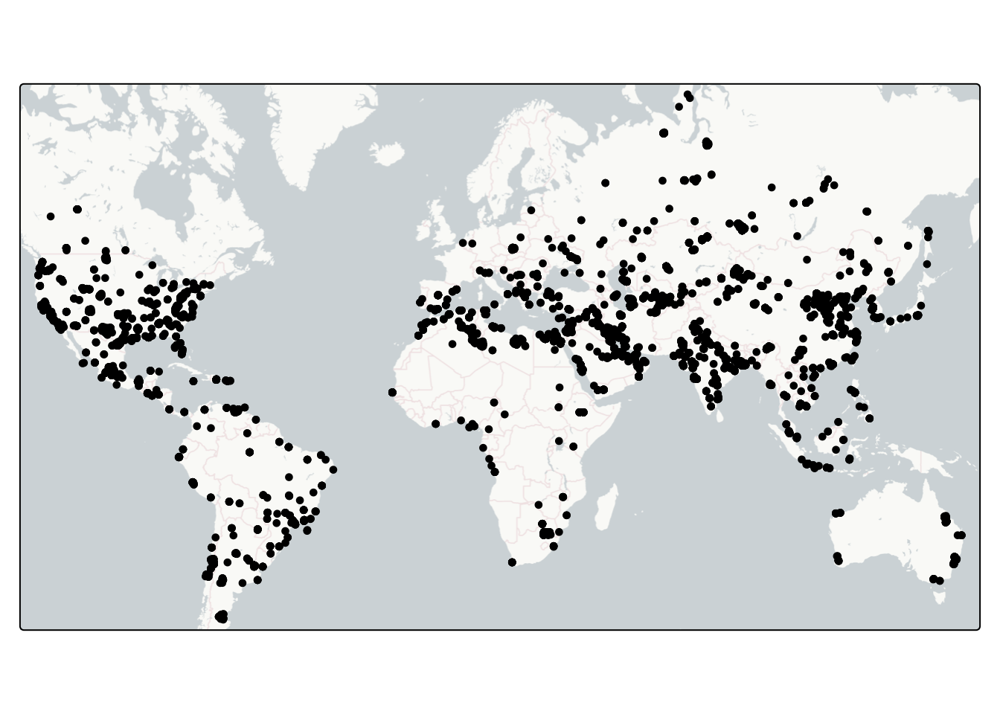
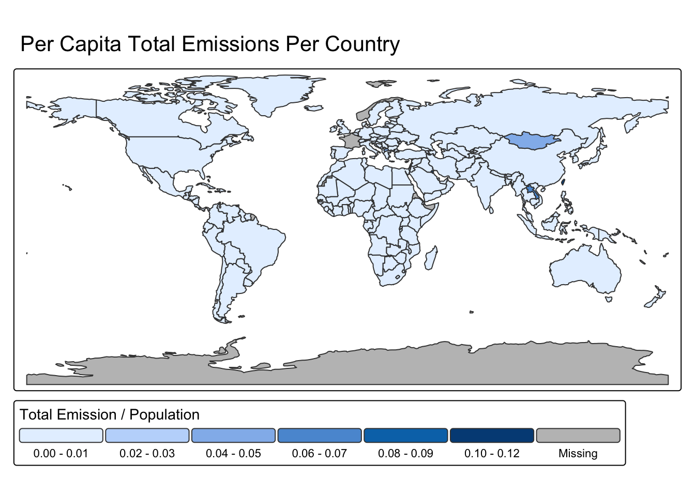

library(tidyverse)
library(ggplot2)
library(tmap)
library(sf)
library(dplyr)
library(patchwork)
library(lubridate)
library(janitor)data_exploration
Load Libraries
Load in Data
plumes <- read.csv(here::here("data", "plumes.csv"))
#world <- read_sf(here::here("data", "gadm_410.gdb")) %>%
#clean_names()
countries <- spData::worldCleaning
# Make sf
plumes <- st_as_sf(plumes, coords = c('plume_longitude', 'plume_latitude'), crs = "EPSG:4326")
#plumes_x <- st_as_sf(plumes, coords = c('plume_latitude', 'plume_longitude'), crs = "EPSG:4326")
plumes$datetime <- as_date(plumes$datetime)Subsetting
# Subset for CO2 and CH2's AVG and SUM emissions per sector
plume_sector_gas <- plumes %>%
st_drop_geometry() %>%
group_by(ipcc_sector, gas) %>%
summarise(mean = mean(emission_auto,
na.rm = TRUE),
sum = sum(emission_auto,
na.rm = TRUE),
.groups = "drop")
#..................Geo-Spatial Wrangling + Subseting......................
# Joining country data to plumes df
plume_countries <- st_join(countries, plumes) # join dfs
# New df: countries total emissions and population
countries_tot_emissions <- plume_countries %>%
group_by(name_long) %>%
summarise(total_emission = sum(emission_auto, na.rm = TRUE),
pop = sum(pop, na.rm = TRUE),
.groups = "drop") %>%
mutate(weighted_total_emission = total_emission/pop)1) Geospatial Mapping
1a) Mapping Plumes
Code
tm_shape(plumes) +
tm_dots() +
tm_basemap("CartoDB.PositronNoLabels")
1b) Per Country - Mapping
Code
# Total emissions per Country
tm_shape(countries_tot_emissions) +
tm_polygons(fill = 'total_emission',
fill.legend = tm_legend(title = "Total Emissions",
orientation = "landscape"
)) +
tm_title(text = "Total CO2 and CH4 Emissions Per Country") 
Code
# weighted / Per capita Emissions per Country
tm_shape(countries_tot_emissions) +
tm_polygons(fill = 'weighted_total_emission',
fill.legend = tm_legend(title = "Total Emission / Population",
orientation = "landscape"
)) +
tm_title(text = "Per Capita Total Emissions Per Country")
1c) Per Country - Plots
Emissions of the Top Countries
Code
# GGplot of total emissions per country
countries_tot_emissions %>%
filter(total_emission >= 1000000) %>%
ggplot() +
geom_point(aes(y = reorder(name_long, total_emission),
x = total_emission)) +
labs(title = "Top Country's Total Emission",
y = "Top Countries Emitters",
x = "Total CO2 and CH4 Emissions")
Code
# GGplot of emissions per capita per country
countries_tot_emissions %>%
filter(total_emission >= 1000000) %>%
ggplot() +
geom_point(aes(y = reorder(name_long, weighted_total_emission),
x = weighted_total_emission)) +
labs(title = "Top Country's Emissions per Capita",
y = "Top Countries Emitters",
x = "Weighted CO2 and CH4 Emissions")
2) CO2 and CH4 emissions
2a) AVERAGE emission per sector
One map where the axis are the same. Another map where the axis are different.
Code
# same x axis
plume_sector_gas %>%
ggplot() +
geom_col(aes(x = ipcc_sector, y = mean)) +
facet_wrap(~gas) +
coord_flip()
Code
# Seperate x axis
avg_co2_sector <- plume_sector_gas %>%
filter(gas == "CO2") %>%
ggplot() +
geom_col(aes(y = ipcc_sector,
x = mean),
fill = "grey40") +
labs(title = "Sector's Avg Carbon Dioxide (CO2) Emissions",
y = "Sectors",
x = "Mean CO2 Emissions")
avg_ch4_sector <- plume_sector_gas %>%
filter(gas == "CH4") %>%
ggplot() +
geom_col(aes(y = ipcc_sector,
x = mean),
fill = "slategray4") +
labs(title = "Sector's Avg Methane (CH4) Emissions",
y = "Sectors",
x = "Mean CH4 Emissions")
avg_co2_sector / avg_ch4_sector
2b) TOTAL emission per sector
One map where the axis are the same. Another map where the axis are different.
Code
# same x axis
plume_sector_gas %>%
ggplot() +
geom_col(aes(x = ipcc_sector, y = sum)) +
facet_wrap(~gas) +
coord_flip() +
labs(title = "Carbon Dioxide and Methane sector emissions",
x = "Sectors",
y = "Total Emissions")
Code
# Seperate x axis
sum_co2_sector <- plume_sector_gas %>%
filter(gas == "CO2") %>%
ggplot() +
geom_col(aes(y = ipcc_sector,
x = sum),
fill = "grey40") +
labs(title = "Sector's total Carbon Dioxide (CO2) Emissions",
y = "Sectors",
x = "Total CO2 Emissions")
sum_ch4_sector <- plume_sector_gas %>%
filter(gas == "CH4") %>%
ggplot() +
geom_col(aes(y = ipcc_sector,
x = sum),
fill = "slategray4") +
labs(title = "Sector's total Methane (CH4) Emissions",
y = "Sectors",
x = "Total CH4 Emissions")
sum_co2_sector / sum_ch4_sector
3) CH4 and CO2 Change Overtime
3a) Emissions overtime per sector
Code
# sectors' CO2 emissions over time
plumes %>%
filter(gas == "CO2") %>%
ggplot() +
geom_point(aes(x = datetime, y = emission_auto, col = ipcc_sector),
alpha = 0.5) +
labs(title = "CO2 emissions overtime per sector",
y = "CO2 Emissions",
x = "2025 Months",
col = "Sectors") +
facet_wrap(~ipcc_sector)
Code
# sectors' CH2 emissions over time
plumes %>%
filter(gas == "CH4") %>%
ggplot() +
geom_point(aes(x = datetime, y = emission_auto, col = ipcc_sector),
alpha = 0.5,
size = 0.5) +
labs(title = "CH4 emissions overtime per sector",
y = "CH4 Emissions",
x = "2025 Months",
col = "Sectors") +
facet_wrap(~ipcc_sector)
3b) Highest total emitters emissions overtime
Looking at Provider information as well
Code
plumes %>%
filter(ipcc_sector == "Electricity Generation (1A1)",
gas == "CO2") %>%
ggplot() +
geom_point(aes(x = datetime, y = emission_auto, col = provider),
alpha = 0.5) +
labs(title = "Electricity generation's CO2 overtime by provider",
y = "CO2 Emissions",
x = "2025 Months")
Code
plumes %>%
filter(ipcc_sector == "Oil & Gas (1B2)",
gas == "CH4") %>%
ggplot() +
geom_point(aes(x = datetime, y = emission_auto, col = provider),
alpha = 0.5) +
labs(title = "Oil & gas CH4 overtime by provider",
y = "CH4 Emissions",
x = "2025 Months",
col = "Provider")
Questions
1. What have you learned about your data? Have any potentially interesting patterns emerged? Point to specific visualizations that you created as you describe your findings.
2. In FPM #1, you outlined some questions that you wanted to answer using these data. Have you made any strides towards answering those questions? If yes, how so? If no, what next steps do you need to take (e.g. I need to create X plot type, I still need to track down Y data, I need to restructure existing data so that you can visualize it in Z ways, etc.)? Have any new questions emerged?
3. What challenges do you foresee encountering with your data? These can be data wrangling and / or visualization challenges.